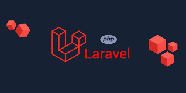

Herramientas De Tecnología Backend:
Herramientas De Tecnología Backend:
Herramientas De Tecnología Backend:
Herramientas De Tecnología Backend:
PHP fue diseñado por el programador danés - canadiense Rasmus Lerdorf , en el año de 1994, es un lenguaje de programación que se adapta especialmente al desarrollo web.
Ahora bien Laravel fue creado por Taylor Otwelles un framework del lenguaje de programación PHP, el mismo que permite desarrollar un sin número de aplicaciones web con un nivel alto de calidad.
| Plantillas ligeras e integradas | Gracias al motor de plantillas, conceden crear diseños excepcionales empleando contenido dinámico, también contiene una multitud de widgets que integran CSS y JS. |
| Compatible con arquitectura MVC | Respalda la separación de la lógica empresarial por un lado y por el otro las capas de presentación, dicho sistema es sencillamente escalable y brinda funciones integradas. |
| Incorpora la herramienta Artisan | Integra una herramienta de línea de comandos denominada Artisan que contribuye a automatizar las tareas repetitivas de programación. |
| Bibliotecas modulares | Laravel entrega sus peculiares bibliotecas modulares que vienen preinstaladas en el sistema, a diferencia de los otros frameworks de PHP. |
| Resuelve problemas concretos | Está proyectado principalmente para solucionar los problemas concretos que se ve en la actualidad, es decir se centra en lo más importante. |
El tipo de licencia de Laravel es Open Source con licencia MIT creada en el Instituto Tecnológico de Massachusetts , siendo un software de licencia gratuito que brinda una gran libertad.
Decidir sobre que framework se va a trabajar depende mucho de que lenguaje vamos a utilizar es decir la experiencia sobre el lenguaje es esencial, es por esto que la curva de aprendizaje en el caso de Laravel es relativamente compleja sino se maneja de forma correcta el lenguaje, pero brinda una excelente forma de trabajo que a su vez lleva un mantenimiento más estructurado y no muy costoso a largo plazo, siendo su gran ventaja la facilidad de migración a bases de datos más eficaces.
Puedo mencionar como ejemplo de uso, una aplicación que utiliza Laravel es Koel que fue creado por el vietnamita Phan An, es un servicio utilizado para la transmisión de audio, que está construido en lenguaje PHP con un framework Laravel para el BackEnd del lado servidor, y con Vue lado cliente para la interfaz, tiene diferentes maneras de descubrir sus archivos multimedia. Por ejemplo, puede buscar canciones manualmente, establecer sus archivos con Amazon S3 o directamente cargar los diferentes archivos mediante la interfaz web.
Koel el considerado un clon de Spotify, por ser de código libre y aceptar ser instalado en el propio ordenador o servidor, teniendo disponibilidad a toda la librería de música.
La página oficial de Laravel es:
